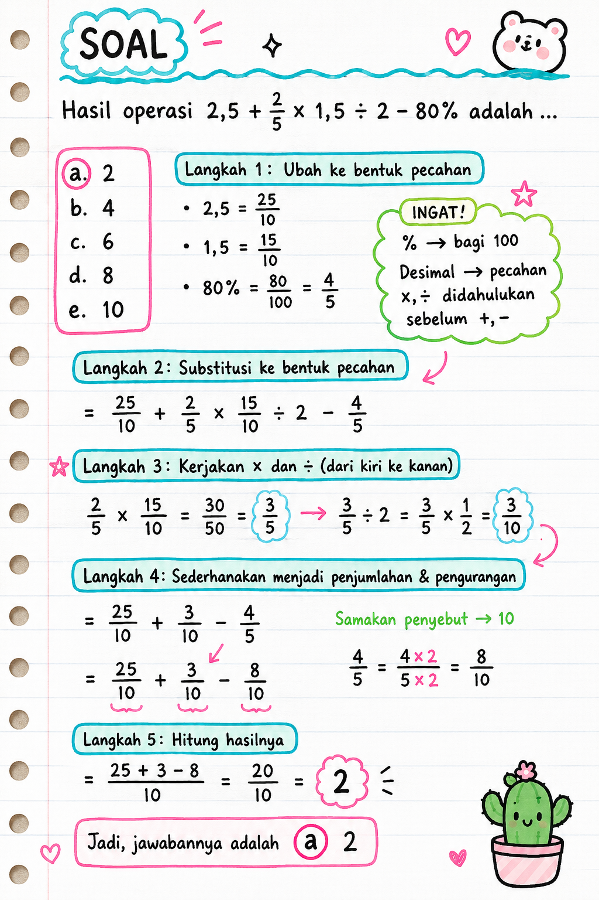
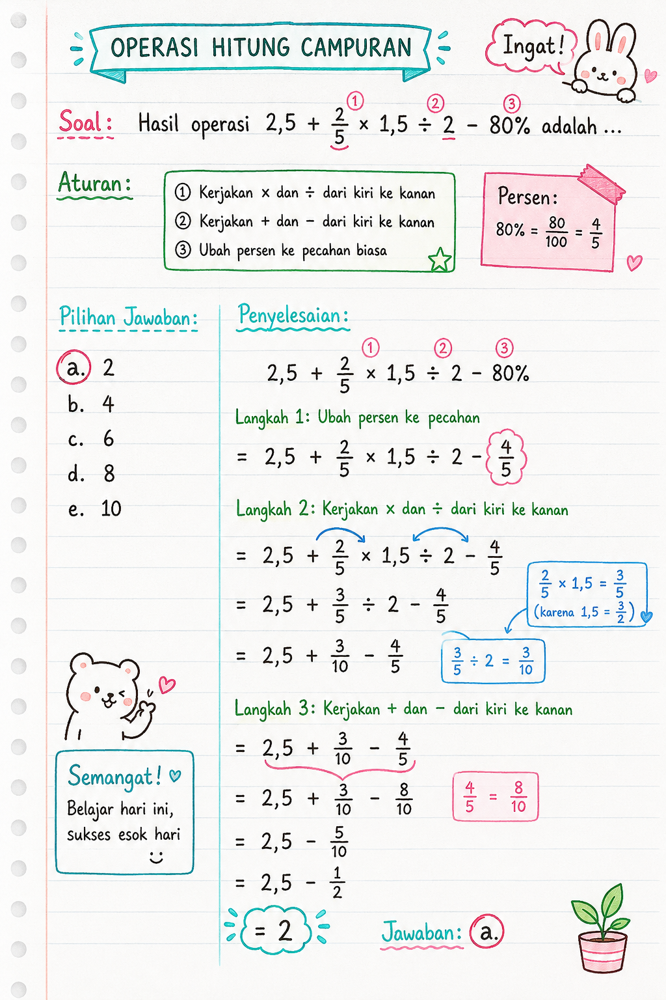

TIU — Operasi Hitung Campuran (Pecahan, Desimal & Persen)
Kategori: TIU — Operasi Bilangan
Tingkat: Mudah – Sedang
ID Soal: a91dec30
Soal
Hasil operasi $2{,}5 + \dfrac{2}{5} \times 1{,}5 \div 2 - 80\%$ adalah ...
- a. 2 ✅
- b. 4
- c. 6
- d. 8
- e. 10
Aturan yang Dipakai
- Kerjakan × dan ÷ dari kiri ke kanan (prioritas lebih tinggi).
- Kerjakan + dan − dari kiri ke kanan (setelah × dan ÷ selesai).
- Ubah persen ke pecahan biasa dulu agar mudah dihitung.
Pembahasan
Langkah 1 — Ubah ke bentuk pecahan
$$2{,}5 = \frac{25}{10}, \quad 1{,}5 = \frac{15}{10}, \quad 80\% = \frac{80}{100} = \frac{4}{5}$$
Langkah 2 — Substitusi ke bentuk pecahan
$$= \frac{25}{10} + \frac{2}{5} \times \frac{15}{10} \div 2 - \frac{4}{5}$$
Langkah 3 — Kerjakan × dan ÷ (kiri ke kanan)
$$\frac{2}{5} \times \frac{15}{10} = \frac{30}{50} = \frac{3}{5}$$
$$\frac{3}{5} \div 2 = \frac{3}{5} \times \frac{1}{2} = \frac{3}{10}$$
Langkah 4 — Sederhanakan menjadi penjumlahan & pengurangan
$$= \frac{25}{10} + \frac{3}{10} - \frac{4}{5}$$
Samakan penyebut ke 10:
$$\frac{4}{5} = \frac{4 \times 2}{5 \times 2} = \frac{8}{10}$$
$$= \frac{25}{10} + \frac{3}{10} - \frac{8}{10}$$
Langkah 5 — Hitung hasilnya
$$= \frac{25 + 3 - 8}{10} = \frac{20}{10} = 2$$
Jawaban
$$\boxed{a. \; 2}$$
Catatan Visual


Konsep Kunci
- Urutan operasi (BODMAS/PEMDAS versi Indonesia):
1. Kurung
2. Pangkat / akar
3. × dan ÷ (kiri → kanan)
4. + dan − (kiri → kanan)
- Persen ke pecahan: $p\% = \dfrac{p}{100}$
- Pembagian pecahan: $\dfrac{a}{b} \div c = \dfrac{a}{b} \times \dfrac{1}{c}$
- Desimal ke pecahan: geser koma, pakai penyebut 10, 100, 1000, dst.
Jebakan Umum
- ❌ Mengerjakan + sebelum × / ÷.
- ❌ Lupa mengubah 80% menjadi $\dfrac{4}{5}$ atau $0{,}8$ sebelum dikurangkan.
- ❌ Lupa menyamakan penyebut sebelum menjumlahkan / mengurangkan pecahan.
- ❌ Mengira $\dfrac{3}{5} \div 2 = \dfrac{3}{10}$ itu salah — padahal benar (bagi 2 = kali $\dfrac{1}{2}$).